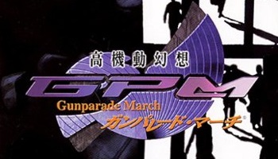

高機動幻想ガンパレード・マーチ
『高機動幻想ガンパレード・マーチ』（こうきどうげんそうガンパレード・マーチ）は、
ソニー・コンピュータエンタテインメントから発売されたコンピュータゲームである。企画・開発アルファ・システム。
ジャンルは基本的にはシミュレーションに属す。
謎の生命体「幻獣」との戦いで生き残ることが目的だが、生き残りさえすれば何をしてもよいという自由度の高さが特徴。
宣伝はほとんど行われなかったが、口コミでブレイクした。
2000年9月28日、プレイステーション向けに発売された。
2003年には『ガンパレード・マーチ ?新たなる行軍歌?』としてテレビアニメが放送された。
また、アニメ化に伴い『月刊コミック電撃大王』において漫画版（作画：さなづらひろゆき）が連載され、
全3巻のコミックが発売された。小説は2000年に広崎悠意により本編の内容に沿ったものが発売。
2001年からは榊涼介によりオリジナル要素を多分に含んだ作品が発売されており、現在まで続くシリーズ作となっている。
「"高機動幻想ガンパレード・マーチ"」
『フリー百科事典 ウィキペディア日本語版』より。
URL: http://ja.wikipedia.org/wiki/高機動幻想ガンパレード・マーチ